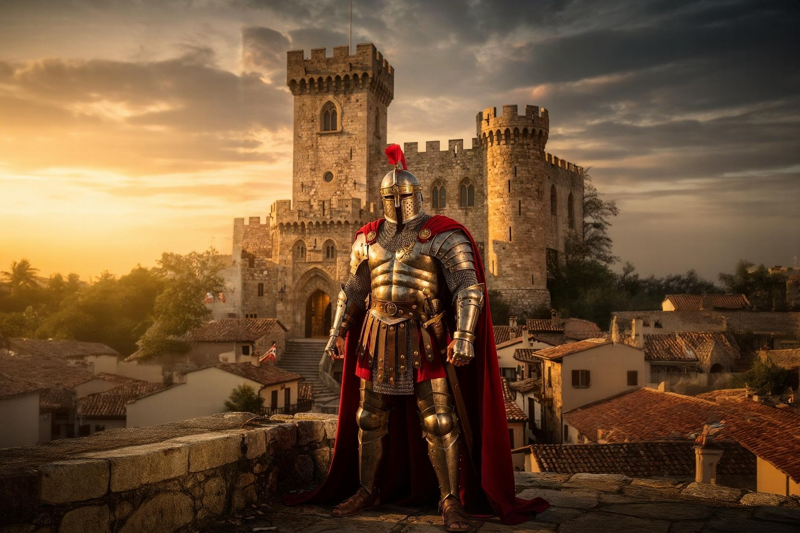

Sabratha
A Roman city on the Mediterranean shore
Sabratha sits on Libya's Mediterranean coast about 65 kilometres west of Tripoli, and its ruins rank among the best-preserved Roman sites in North Africa. Founded as a Phoenician trading post around 500 BC, it later became one of the three cities that gave the wider Tripolitania region its name, alongside Oea (Tripoli) and Leptis Magna. Inscribed as a UNESCO World Heritage Site in 1982, Sabratha's star attraction is a three-storey Roman theatre, restored in the 1930s, that still stands with the Mediterranean Sea as its backdrop.
Region
Tripolitania
Distance from Tripoli
~65 km west
Known for
The Roman theatre
Best for
Day trips, Roman archaeology
History of Sabratha
Sabratha's harbour was established by Phoenician traders around the 5th century BC as an outlet for goods moving between the African interior and the Mediterranean. Following the Punic Wars, the city passed briefly under the Numidian kingdom before being annexed into the Roman province of Africa in the 1st century BC. Under Roman rule, and especially during the reign of the Severan emperors in the 2nd and 3rd centuries AD, Sabratha nearly doubled in size and was adorned with a forum, temples to Jupiter, Isis, Hercules, and Serapis, and its famous theatre. A powerful earthquake in 365 AD badly damaged the city, and it fell into decline under Vandal control in the 5th century before eventually being buried and forgotten until Italian archaeologists rediscovered and excavated it in the 1920s and 1930s, reconstructing much of the theatre in the process.
Top Things to Do in Sabratha
The Roman Theatre
Built around 175–200 AD and largely reconstructed in the 1930s, this three-storey theatre is the largest in Roman Africa. Its stage wall, once capable of seating around 6,000 spectators, is decorated with carved reliefs depicting scenes from classical mythology.
The Forum and Temples
The remains of Sabratha's civic forum are surrounded by the ruins of several temples, including those dedicated to Liber Pater, Hercules, Isis, and Serapis, each reflecting the city's cosmopolitan religious life under Rome.
The Basilica of Justinian
A Byzantine-era basilica with surviving mosaic floors, built after Sabratha came under Byzantine control following the decline of Vandal rule.
The Museum
A small on-site museum displays statuary, mosaics, and everyday objects recovered from the excavations, helping put the ruins into context.


Best Time to Visit & Getting There
The best months to visit Sabratha are October through April, avoiding the intense heat and haze of summer. The site is an easy day trip from Tripoli by road, making it one of the most accessible of Libya's Roman ruins, and it is often combined with a wider western tour that includes the Nafusa Mountains and Ghadames.
For travellers with limited time in Libya, Sabratha offers one of the best returns on a single day trip: a world-class Roman site, easily reached, with the Mediterranean as a backdrop.